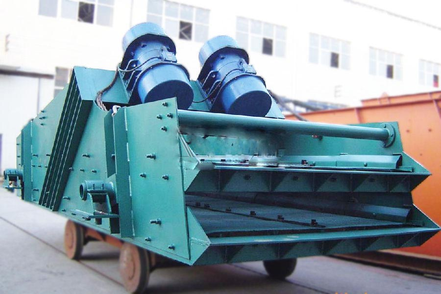

- Home >
- feeding screening >
- Vibrating Screen Problems Solutions

Construction waste crushing production line

Mobile construction waste crushing station for urban construction waste crushing.
Vibrating Screen Problems Solutions
Vibrating Screen Problems Solutions Introduction
Linear vibrating sieve high precision, large capacity, simple structure, low energy consumption, low noise, long screen life, sealing, and minimal fugitive dust, easy maintenance, can be used in automated production lines in operation. The product is widely used in screening chemical, food, plastics, pharmaceuticals, metallurgy, glass, building materials, food, fertilizers, abrasives, ceramics and other industries in a dry powder or granular material.

Vibrating Screen Problems Solutions Product Overview
Linear vibration produced by screening using the vibration motor excitation as the vibration source, so that the material to be tossed in the sieve, while forward in a straight line, the material from the feeder into the screening machine feed inlet evenly through multi-screen net produce several kinds of specifications of the oversize, undersize fraction were discharged from their exports. With low energy consumption, high output, simple structure, easy maintenance, fully enclosed structure, no dust, auto-nesting, more suitable for pipeline operations. Linear shaker works
Linear vibrating screen is a dual vibration motors. When two vibrating motor do synchronous, counter rotation, the eccentric excitation force generated cancel each other out in a direction parallel to the axis of the motor, the motor shaft in the direction of a force in a vertical stack, and therefore the trajectory shaker machine a straight line. Two motor axis relative to the screen surface with a dip in the joint effect of the exciting force and material self-gravity, the screen surface material was tossed leap forward in a straight line, so as to achieve the purpose of screening and classification of materials. It is mainly applied in 0.074-5mm, screen size of less than 70% moisture content, non-sticky variety of dry powder material. The maximum feed size of not more than 10mm.
Linear vibrating screen technical parameters
| Model |
Sieve size （Length×Width） |
Screen surface layers | Mesh size | Feed size | Capacity | Motor Power | weight | Vibration frequency | Double amplitude | Screen surface inclination | Dimensions(L×W×H) |
| （mm） | （mm） | （mm） | (t/h) | （kw） | （kg） | (Hz) | (mm) | （℃） | (mm) | ||
| ZSG1237 | 3700×1200 | 1 | 4-50 | ≤200 | 10-100 | 2.2×2 | 2250 | 16 | 6-8 | 15 | 3800×2050×1920 |
| 2ZSG1237 | 3700×1200 | 2 | 4-50 | ≤200 | 10-100 | 2.2×2 | 3345 | 16 | 6-8 | 15 | 3800×2050×2200 |
| ZSG1443 | 4300×1400 | 1 | 4-50 | ≤200 | 10-150 | 3×2 | 4100 | 16 | 6-8 | 15 | 4500×3040×2500 |
| 2ZSG1443 | 4300×1400 | 2 | 4-50 | ≤200 | 10-150 | 3×2 | 4900 | 16 | 6-8 | 15 | 4500×3040×2700 |
| 3ZSG1443 | 4300×1400 | 3 | 4-50 | ≤200 | 10-150 | 3×2 | 5870 | 16 | 6-8 | 15 | 4500×3040×2820 |
| 2ZSG1548 | 4800×1500 | 2 | 5-50 | ≤200 | 15-200 | 3×2 | 5836 | 16 | 8-10 | 15 | 4800×3140×2814 |
| 3ZSG1548 | 4800×1500 | 3 | 5-50 | ≤200 | 15-200 | 3×2 | 6900 | 16 | 8-10 | 15 | 4799×3140×3014 |
| 2ZSG1848 | 4800×1800 | 2 | 5-50 | ≤300 | 50-500 | 5.5×2 | 6489 | 16 | 8-10 | 15 | 4799×3440×2814 |
| 3ZSG1848 | 4800×1800 | 3 | 5-50 | ≤300 | 50-500 | 5.5×2 | 7750 | 16 | 8-10 | 15 | 4799×3440×3014 |
| 4ZSG1848 | 4800×1800 | 4 | 5-50 | ≤200 | 50-500 | 5.5×2 | 8300 | 16 | 8-10 | 15 | 4799×3440×3503 |
| 2ZSG1860 | 6000×1800 | 2 | 5-150 | ≤300 | 80-600 | 7.5×2 | 9950 | 16 | 8-10 | 15 | 6000×3440×3326 |
Linear shaker structure and characteristics:
(1) Structure: It is the main by one, feed, 2, screen (board), 3, viewing port, 4, Box 5, stand, 6, vibration motor, 7, vibrator, 8, isolation springs, 9, a gate of several parts.
(2) Equipment Type: basic, for a dust-proof requirements of the occasion for screening. Open type, no dust requirements for general screening of occasions.
(3) Features:
1, small size, light weight, simple structure, easy installation, easy maintenance.
2, low noise, low energy consumption, high efficiency and low cost.
3, high screening precision, no dust pollution, favorable to environmental protection.
4, can replace a variety of screens, and long service life.
Leave Me A Message, Now
If you have any questions regarding equipment prices, production line configuration or other problems, you can send a message to us, we will contact you soon.